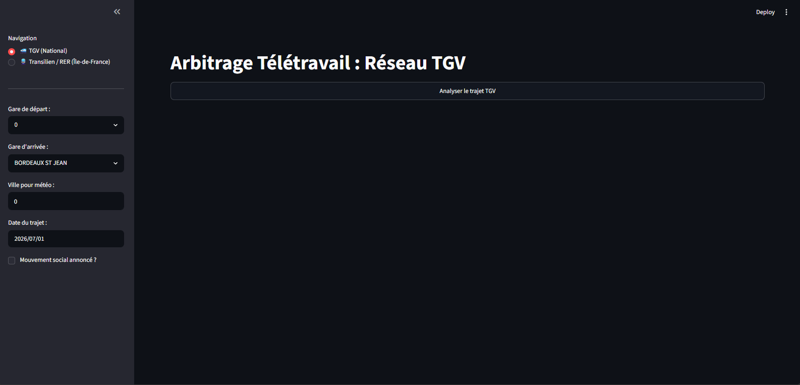
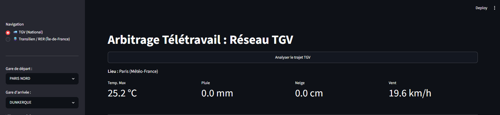
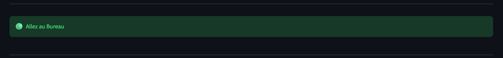
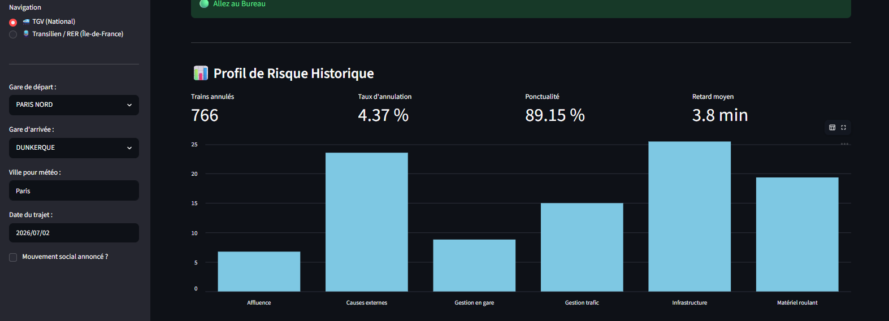
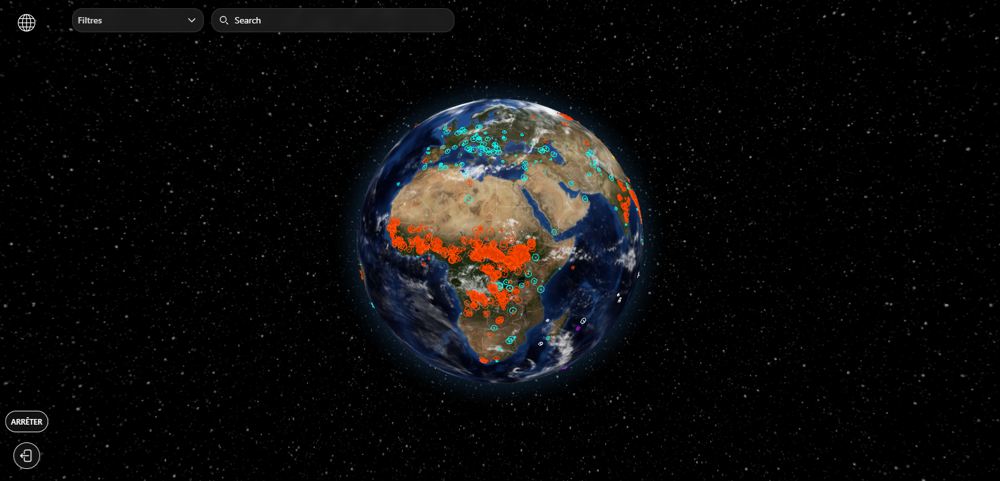
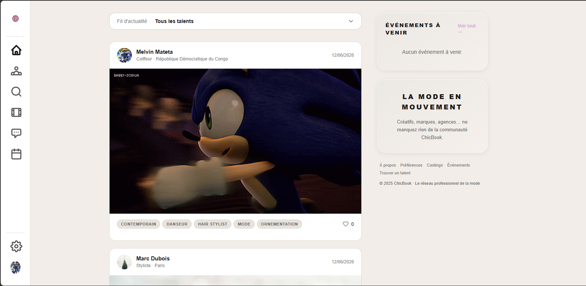
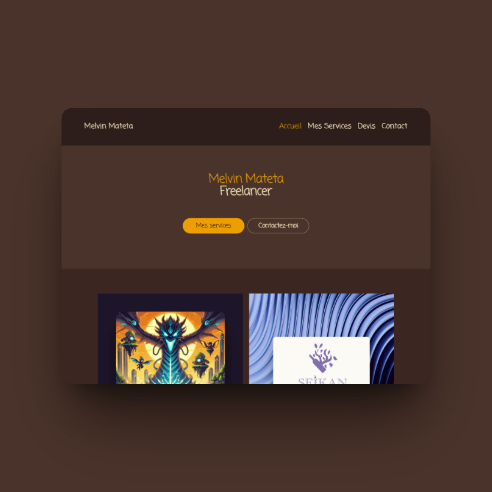

Arbitrage Travail-Région
Compétences
Python, Streamlit, Pandas,
Data Science, API REST
Équipe
Melvin Mateta
Date
Avril 2026

Présentation du Projet
Arbitrage Travail-Région est une application web d'aide à la décision à destination des salariés d'Île-de-France et des régions. L'application résout un problème quotidien concret : indiquer à l'utilisateur s'il est judicieux de se déplacer au bureau ou s'il est préférable de rester en télétravail. Ce verdict est calculé à partir de l'affluence historique et du niveau estimé de stress ou de perturbations sur le réseau de transports en commun (SNCF/RATP).
La Démarche Scientifique & Le Pivot Technique
Le blocage du Machine Learning : L'approche de départ prévoyait d'utiliser un modèle prédictif supervisé de classification (RandomForestClassifier). Cependant, la structure des données fournies en Open Data par la SNCF (ponctualité, taux de régularité) ne descend pas en dessous d'une maille mensuelle. Il s'est avéré mathématiquement impossible d'entraîner une intelligence artificielle à détecter des anomalies journalières (liées à la météo du jour ou à une grève soudaine) sur la base de moyennes mensuelles lissées.
La solution algorithmique déterministe : Face à cette contrainte de données, j'ai pivoté vers un modèle algorithmique déterministe transparent. Le système calcule un "score de stress" pondéré en combinant plusieurs facteurs de perturbation en temps réel : volume des précipitations, chutes de neige, vent, mouvements sociaux déclarés, jour de la semaine (mardi et jeudi pénalisés), et fréquence horaire de passage de la gare sélectionnée.
Géolocalisation & Météo Hyper-Locale
L'application intègre un outil de géocodage. Lorsque l'utilisateur saisit son adresse ou sa commune, les coordonnées géographiques exactes (latitude/longitude) sont extraites en temps réel. Ces coordonnées servent ensuite à interroger l'API Open-Meteo pour récupérer les conditions atmosphériques ultra-locales influant sur les conditions ferroviaires.


Verdict d'Arbitrage Instantané
L'algorithme de scoring synthétise l'ensemble des données (météo, jour, gares, mouvements sociaux) pour retourner un verdict visuel catégorique : 🟢 Bureau (conditions favorables), 🟠 Télétravail Conseillé (risque de ralentissements modérés), ou 🔴 Télétravail Fortement Recommandé (fort risque de saturation ou blocage complet du réseau).
Tableaux de Bord de Tendances
L'application Streamlit affiche des graphes interactifs détaillant les prévisions et tendances sur les 7 prochains jours. De plus, un indicateur d'affluence horaire estimée permet aux collaborateurs d'identifier les fenêtres de déplacement optimales s'ils choisissent de se rendre physiquement sur leur lieu de travail.

Voir d'autres projets

Event-Horizon
Globe 3D interactif des incidents
ChicBook
Plateforme de recrutement artistique
Pokédex
Fiche descriptive du Pokédex
Générateur de Maquette
Un générateur de maquette type site web
The Chronicles of The Abyss
Venez découvrir la soundtrack du projet.
Calculatrice
Une calculatrice type CasioPortfolio WordPress
Un portfolio professionnel sous WordPress